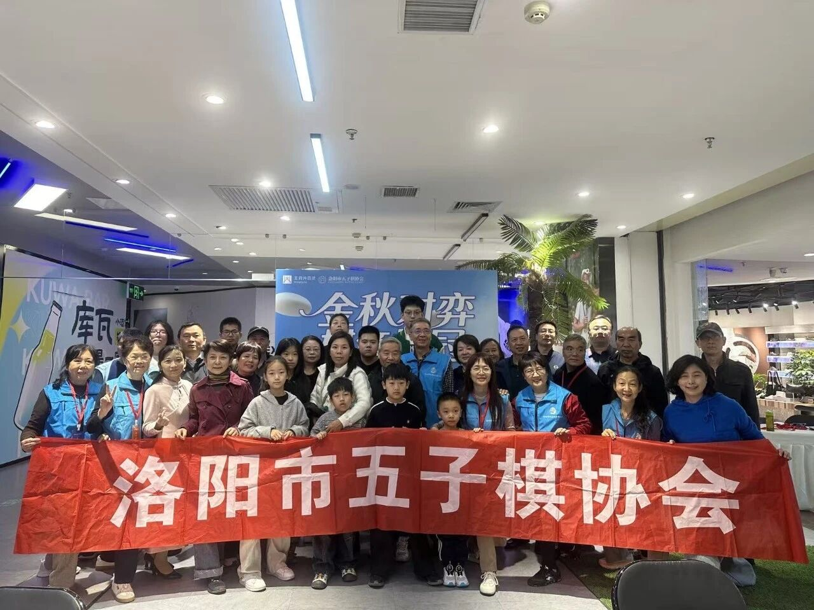
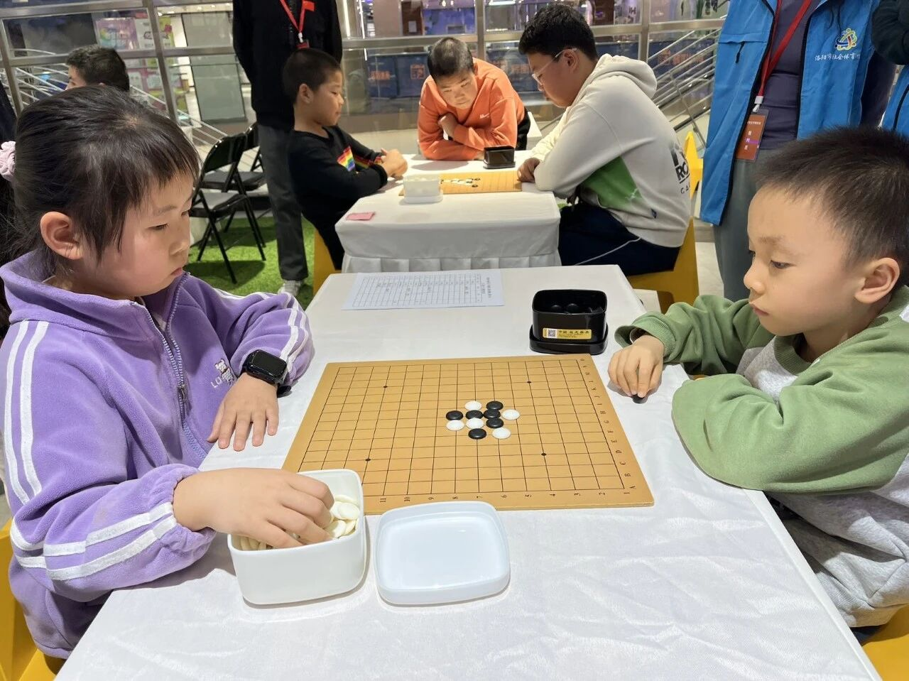
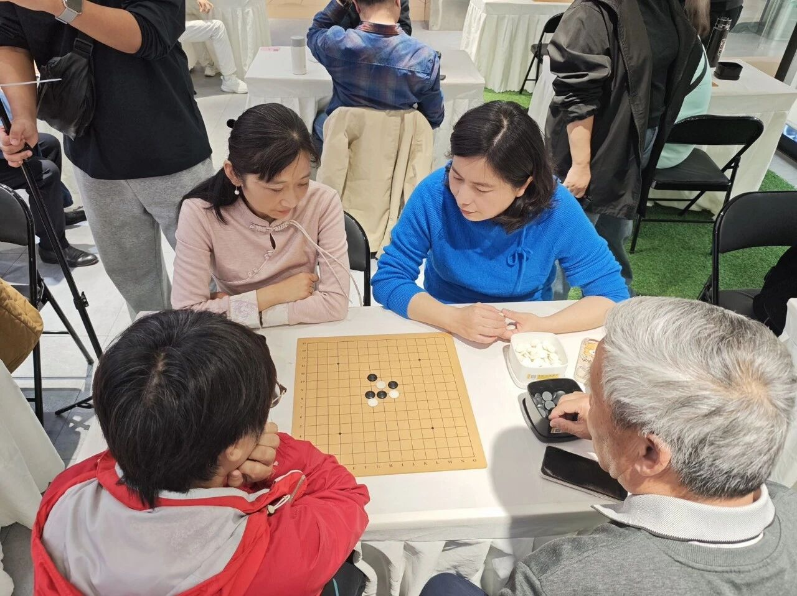
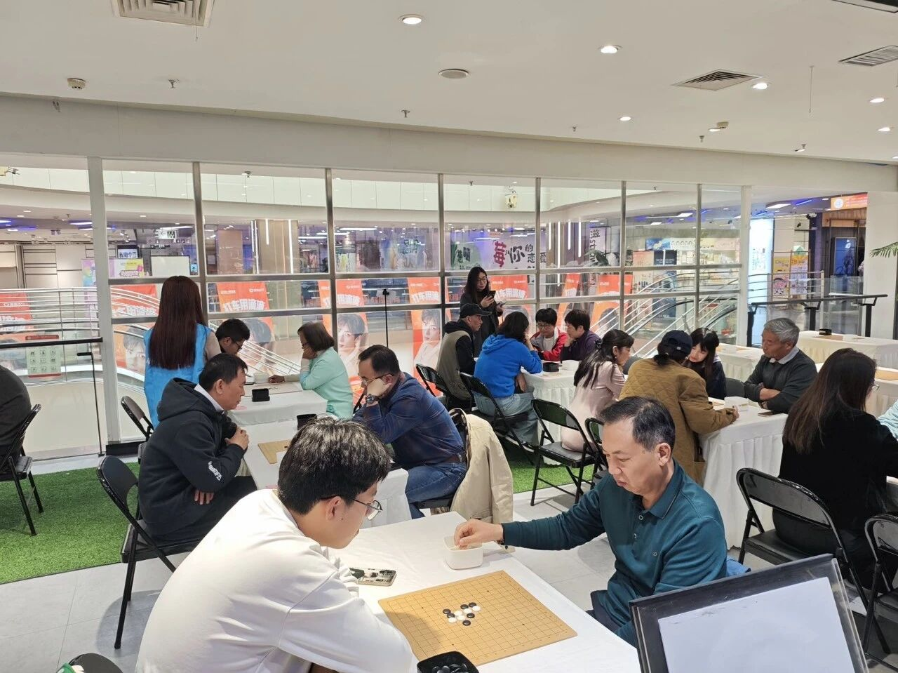
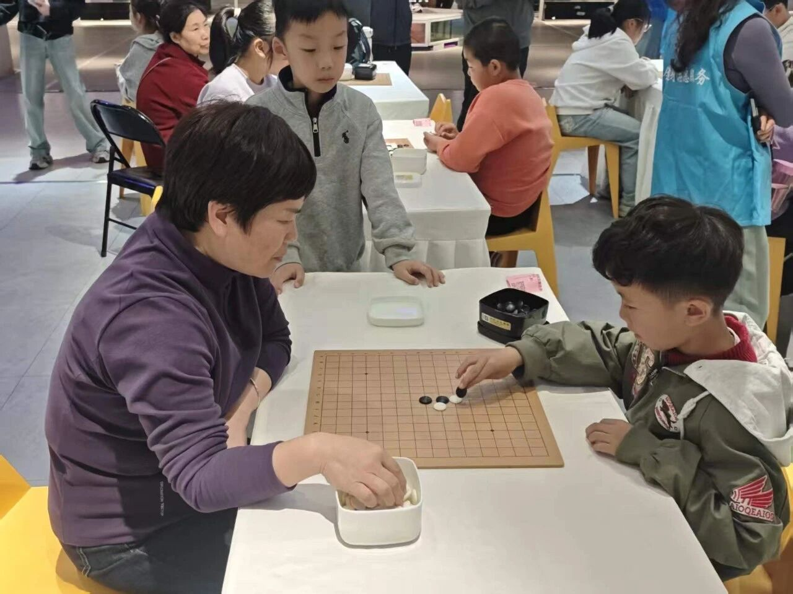
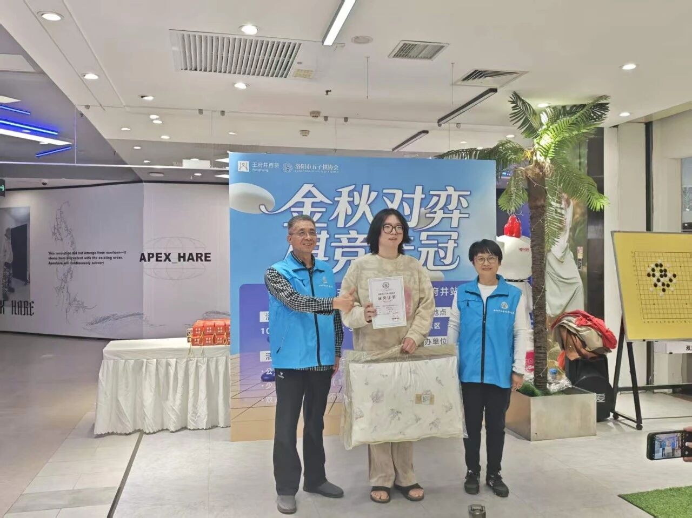
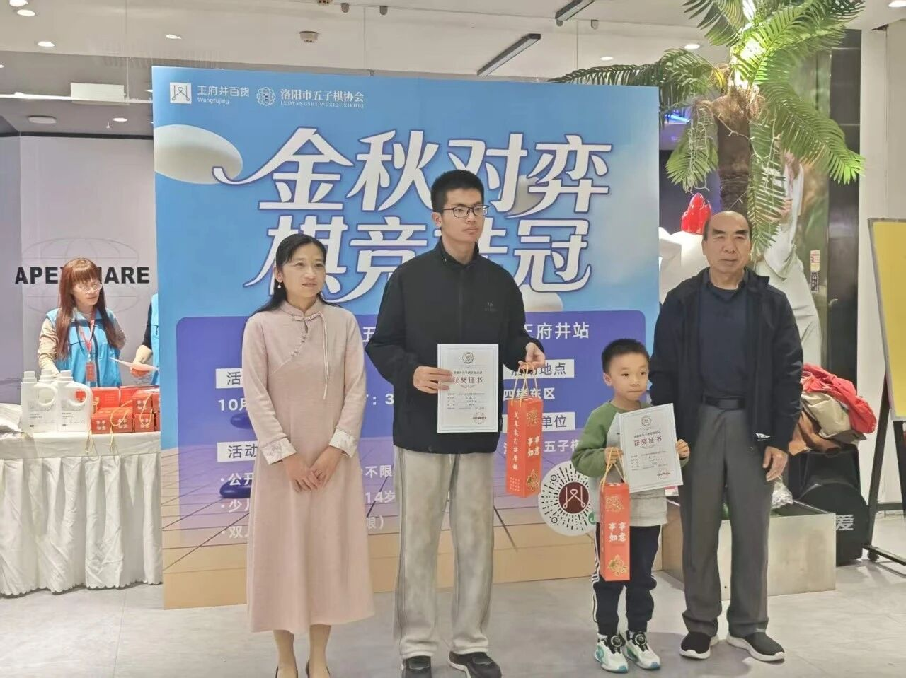
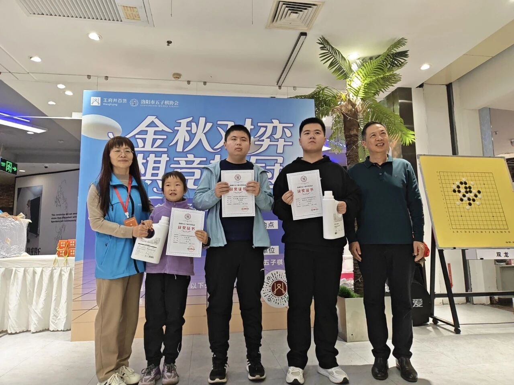
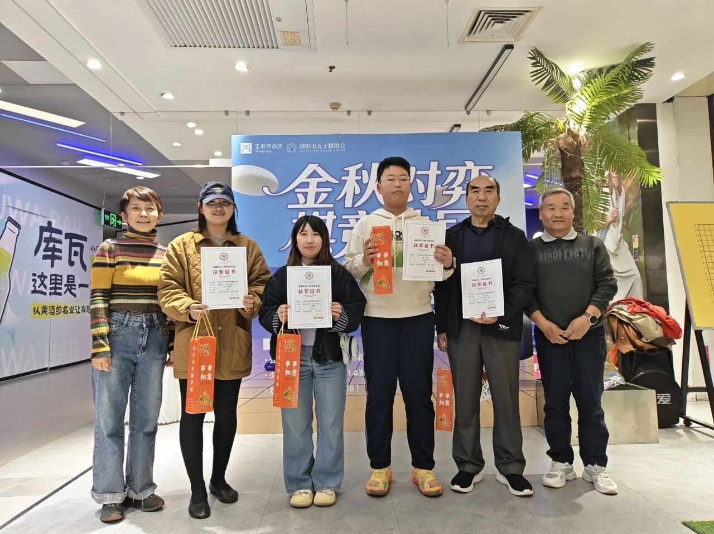
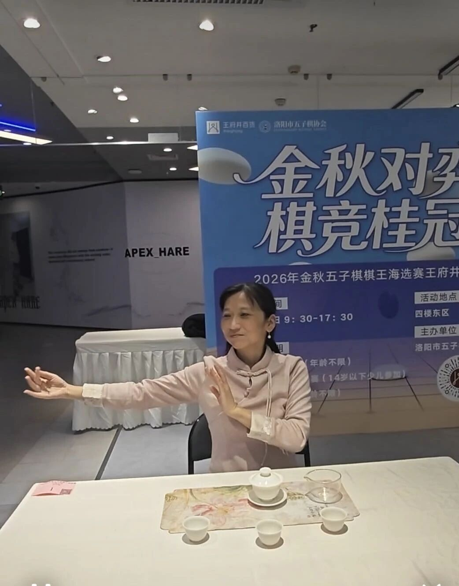

金秋对弈，棋竞桂冠
2026金秋五子棋棋王海选赛王府井站圆满落幕
金秋落子，以棋会友。10月31日，由洛阳市五子棋协会主办的“金秋对弈，棋竞桂冠”五子棋棋王海选赛在西工王府井百货四楼东区顺利开赛。本次赛事设置公开组个人赛、少儿无级组个人赛、双人联棋赛三个项目，吸引众多棋手同台竞技。





公开组：李致阳登顶
经过一整天紧张激烈的角逐，公开组名次尘埃落定。


双人联棋：配合见功力
双人联棋赛场同样精彩纷呈，获奖名单如下：


少儿无级组：小棋手初露锋芒
- 1第一名：范睿博
- 2第二名：滑艺深
- 3第三名：李允
- 4第四名：郭子皓
本次海选的公开组冠军将获得年底棋王挑战赛的入场券。赛场之上，棋手们凝神思索、沉着落子，在方寸棋盘间展现连珠妙思。
比赛结束后，双人联棋棋手、洛阳市茶艺评茶师协会副会长夏蕾为现场来宾带来精彩茶艺表演；小棋手万芊语、张一诺登台献上舞蹈节目，为赛事增添了浓厚的文艺气息。

本次赛事抖音和咪咕视频全程直播，将棋牌运动融入商圈，为广大五子棋爱好者搭建交流切磋的平台。大家在对弈中增进棋艺、结识棋友，尽享五子棋独有的智趣魅力。